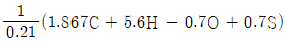
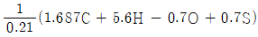
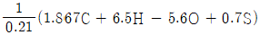
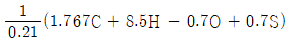
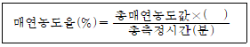
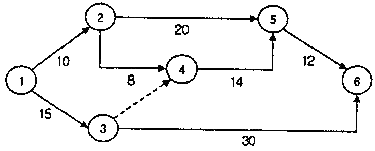

에너지관리기능장 (2011-04-17 기출문제)
1과목: 임의 구분
1. 연돌의 높이가 20m이고, 0℃, 1atm에서 배기가스의 비중량이 1.2kg/Nm3이고, 배기가스 온도가 220℃, 외기비중량이 1.1 kg/Nm3인 경우에 이론 통풍력은 약 몇 mmAq 인가?
- 0.7
- 4.4
- 8.7
- 12.6
(정답률: 46%)

2. 1보일러 마력을 설명한 것으로 옳은 것은?
- 1시간에 0℃의 물 15.65kg을 같은 온도의 증기로 변화시킬 수 있는 능력
- 1시간에 100℃의 물 15.65kg을 같은 온도의 증기로 변화시킬 수 있는 능력
- 1시간에 100℃의 수증기 15.65kg을 포화 증기로 변화시킬 수 있는 능력
- 1시간에 0℃의 물 15.65kg을 건포화 증기로 변화시킬 수 있는 능력
(정답률: 81%)
3. 스프링식 안전밸브 중 동일분출 면적에서 분출량이 큰 순서로 된 것은?
- 전량식＞전 양정식＞고 양정식＞저 양정식
- 전 양정식＞전량식＞고 양정식＞저 양정식
- 고 양정식＞저 양정식＞전 양정식＞전량식
- 고 양정식＞전 양정식＞전량식＞저 양정식
(정답률: 76%)
4. 보일러 자동제어에서 연소제어의 조작량과 제어량에 해당되지 않는 것은?
- 증기압력
- 노내압력
- 연소가스량
- 증기온도
(정답률: 58%)
5. 전열면적이 12m2인 온수발생 보일러의 방출관의 안지름 크기는?
- 15 mm이상
- 20 mm이상
- 25 mm이상
- 30 mm이상
(정답률: 58%)
6. KS에서 규정한 열정산의 조건에 대한 설명 중 틀린 것은?
- 전기에너지는 1kW당 539 kcal/h로 환산한다.
- 보일러의 효율산정방식은 입출열법과 열손실법으로 실시한다.
- 증기의 건도는 98% 이상인 경우에 시험함을 원칙으로 한다.
- 열정산의 기준온도는 시험시의 외기온도를 기준으로 한다.
(정답률: 65%)
7. 중유가 석탄에 비해서 우수한 점을 설명한 것으로 틀린 것은?
- 중유의 발열량은 석탄에 비해서 높다.
- 중유는 석탄보다 운반과 저장이 어렵다.
- 중유는 석탄보다 완전연소하기 쉬워서 열효율이 높다.
- 중유는 석탄보다 연소의 조절이 쉽다.
(정답률: 89%)
8. 과열기에 대한 다음 설명 중 틀린 것은?
- 과열증기의 단점은 부하변화에 대한 온도 조절이 곤란하고 열량 손실이 많다.
- 과열증기 사용 시 관내 부식방지 및 마찰저항을 감소시킬 수 있다.
- 과열증기는 발생포화증기의 압력변화 없이 온도만 높인 증기이다.
- 과열기의 종류는 전열방식에 따라 병류형, 향류형, 혼류형이 있다.
(정답률: 54%)
9. 보일러에 설치하는 압력계의 검사시기가 맞지 않은 것은?
- 신설보일러의 경우 압력이 오른 후에 검사한다.
- 점화전이나 교체 후에 검사한다.
- 프라이밍이나 포밍이 얼이날 때나 의심이 날 때 검사한다.
- 부르동관이 높은 열에 접촉했을 때 검사한다.
(정답률: 78%)
10. 보일러 분출장치의 설치목적으로 가장 거리가 먼 것은?
- 전열면에 스케일 생성을 방지한다.
- 관수의 신진대사를 원활하게 하여 대류열을 향상시킨다.
- 수면계 파손을 방지한다.
- 관수의 불순물 농도를 한계값 이하로 유지한다.
(정답률: 87%)
11. 집진장치의 종류 중 습식 집진장치에 속하는 것은?
- 관성력식
- 중력식
- 원심력식
- 회전식
(정답률: 64%)
12. 방열관의 입구, 출구의 높이차가 500mm이고 입구의 온도 60℃, 출구의 온도 50℃일 때 방열관에서 순환수두는 약 얼마인가? (단, 50℃의 비중이 0.9784이고, 60℃의 비중은 0.9684이다.)
- 3 mmH2O
- 4 mmH2O
- 5 mmH2O
- 6 mmH2O
(정답률: 58%)
13. 보일러제조기술규격에서 노통연관 보일러 및 수평노통보일러의 상용수위는 동체 중심선에서부터 동체 반지름의 몇 % 이하로 정하고 있는가?
- 70
- 80
- 75
- 65
(정답률: 66%)
14. 난방부하를 감소시키기 위한 방법으로 옳지 않은 것은?
- 창문을 복층유리로 시공한다.
- 열공급 보일러의 효율을 높이는 노력을 한다.
- 난방장소의 공기누출 유입을 최소화 시킨다.
- 공급 열원과 사용처의 특성을 고려한 난방방식을 채택한다.
(정답률: 73%)
15. 고압기류식 분무버너의 특성 설명으로 가장 옳은 것은?
- 연료유의 점도가 크면 비교적 무화가 곤란하다.
- 연소 시 소음의 발생이 적다.
- 유량 조절범위가 1:3 정도로 좁다.
- 공기 또는 증기를 분사시켜 기름을 무화하는 방식이다.
(정답률: 89%)
16. 터보형 송풍기가 장착된 보일러에서 풍량조절 방법이 아닌 것은?
- 댐퍼의 조절에 의한 방법
- 회전수 변화에 의한 방법
- 송풍기 깃(vane)의 수량조절에 의한 방법
- 흡입베인의 개도에 의한 방법
(정답률: 87%)
17. 고체 및 액체연료 1kg에 대한 이론 공기량(Nm3)의 체적을 구하는 식은? (단, C : 탄소, H : 수소, O : 산소, S : 황)




(정답률: 71%)
18. 다음 매연농도율을 구하는 공식에서 ( )안에 적합한 값은?

- 5
- 10
- 15
- 20
(정답률: 63%)
19. 강판이나 알루미늄 판에 강관이나 동간 등을 용접 또는 철물을 사용하여 부착하고 배면에는 단열재를 붙여 열손실을 방지하도록 하며 일정한 규격의 제품을 조합하여 복사면을 구성하도록 한 방식은?
- 파이프매설식
- 유닛패널식
- 덕트식
- 벽패널식
(정답률: 91%)
20. 증기난방에서 사용되는 장치 및 기기가 아닌 것은?
- 증기보일러
- 응축수탱크
- 트랩
- 팽창탱크
(정답률: 89%)
2과목: 임의 구분
21. 보일러 난방기구인 방열기에 대한 설명 중 틀린 것은?
- 방열기의 호칭은 종별-형×절수(쪽수, 섹션수)로 표시한다.
- 주형 방열기에는 2세주, 3세주, 4세주형의 3종류가 있다.
- 벽걸이형 방열기는 벽면과 50~60cm 정도 간격을 두어 설치하는 것이 좋다.
- 증기방열기의 표준상태에서 발생하는 표준방열량은 650[kcal/m2h]이다.
(정답률: 84%)
22. 다음 중 지역난방의 특징 설명으로 틀린 것은?
- 에너지를 효율적으로 이용할 수 있다.
- 연료비와 인건비를 줄일 수 있다.
- 열효율이 낮아 비경제적이다.
- 각 건물의 난방운전이 합리적으로 된다.
(정답률: 91%)
23. 방출밸브를 밀폐식 구조로 하든가 보일러 밖의 안전한 장소에 방출시킬 수 있는 구조를 갖추어야 하는 보일러는?
- 라몬트 보일러
- 열매체 보일러
- 노통연관 보일러
- 벤슨 보일러
(정답률: 62%)
24. 보일러 수중의 용존 가스를 제거하는 장치는?
- 저면 분출장치
- 표면 분출장치
- 탈기기
- pH 조정장치
(정답률: 91%)
25. 보일러의 전열면의 고온부식을 일으키는 연료의 주성분은?
- O2(산소)
- H2(수소)
- S(유황)
- V(바나듐)
(정답률: 92%)
26. 일의 열당량(熱當量)의 값으로 옳은 것은?
- 1/427 kcal/kg·m
- 1/427 kg·m/kcal
- 427 dyne/kg
- 427 kcal/kg
(정답률: 81%)
27. 보일러 안전밸브의 증기누설 원인으로 가장 적합한 것은?
- 배관이 지나치게 길 때
- 압력이 지나치게 낮을 때
- 밸브디스크와 시트 사이에 이물질이 있을 때
- 급수펌프의 압력이 높을 때
(정답률: 91%)
28. 뉴턴(Newton)의 정성법칙과 관계가 있는 사항으로만 구성된 것은?
- 점성계수, 온도
- 동점성계수, 시간
- 속도기울기, 점성계수
- 압력, 점성계수
(정답률: 57%)
29. 다음 중 온실가스가 아닌 것은?
- 이산화탄소(CO2)
- 메탄(CH4)
- 수소불화탄소(HFCs)
- 에탄(C2H6)
(정답률: 60%)
30. 증기의 건도가 0인 상태는?
- 포화수
- 포화증기
- 습증기
- 건증기
(정답률: 82%)
31. 직경 20cm 인 원관 속을 속도 7.3m/s로 유체가 흐를 때 유량은 약 m3/s 인가?
- 0.23 m3/s
- 13.76 m3/s
- 51.1 m3/s
- 3.67 m3/s
(정답률: 62%)
32. 스태판-볼츠만의 법칙을 올바르게 설명한 것은?
- 완전흑체 표면에서의 복사열 전달열은 절대온도의 4승에 비례한다.
- 완전흑체 표면에서의 복사열 전달열은 절대온도의 4승에 반비례한다.
- 완전흑체 표면에서의 복사열 전달열은 절대온도의 2승에 비례한다.
- 완전흑체 표면에서의 복사열 전달열은 절대온도에 반비례한다.
(정답률: 74%)
33. 절대온도(K)는 섭씨온도(℃)에 얼마를 더하는가?
- 32
- 273
- 212
- 460
(정답률: 86%)
34. 연소실에서 가마울림 현상(연소진동)이 발생하는 경우 그 방지대책으로 틀린 것은?
- 2차공기의 가열통풍의 조절방식을 개선한다.
- 연소실 내에서 완전 연소시킨다.
- 연소실과 연도의 구조를 개선한다.
- 수분이 많은 연료를 사용한다.
(정답률: 89%)
35. 신설 보일러의 청정화를 도모할 목적으로 행하는 소다 끓이기에서 사용하는 약품이 아닌 것은?
- 수산화나트륨
- 아황산나트륨
- 탄산나트륨
- 탄산칼슘
(정답률: 74%)
36. 보일러에 나타나는 부식 중 연료내의 황분이나 회분 등에 의해 발생하는 것은?
- 내부부식
- 외부부식
- 전면부식
- 점식
(정답률: 53%)
37. 열역학 제2법칙을 옳게 설명한 것은?
- 열은 그 자신만으로는 저온의 물체로부터 고온의 물체로 이동될 수 없다.
- 어떤계 내에서 물체의 상태변화 없이 절대온도 0도에 이르게 할 수 없다.
- 열을 전부 일로 바꿀 수 있고, 일은 열로 전부 변화시킬 수 없다.
- 에어지는 소멸하지 않고 형태만 바뀐다.
(정답률: 68%)
38. 보일러 수의 관내처리를 위하여 투입하는 청관제의 사용 목적과 무관한 것은?
- pH 조정
- 탈산소
- 가성취화 방지
- 기포발생 촉진
(정답률: 90%)
39. 액체 속에 잠겨있는 곡면에 작용하는 수평분력의 크기는?
- 곡면의 수직상방에 실려 있는 액체의 무게와 같다.
- 곡면에 의해 배제된 액체의 무게와 같다.
- 곡면의 중심에서의 압력과 면적과의 곱과 같다.
- 곡면의 수평투영 면적에 작용하는 전압력과 같다.
(정답률: 32%)
40. 수격작용(water hammer)을 방지하기 위한 조치사항으로 틀린 것은?
- 비수방지관을 설치한다.
- 약품주입내관을 설치한다.
- 증기트랩을 설치한다.
- 증기배관의 보온처리를 철저히 한다.
(정답률: 68%)
3과목: 임의 구분
41. 에너지이용합리화법시행령에서 정하는 진단기관이 보유하여야 하는 장비와 기술인력의 지정기준에 대한 설명이 틀린 것은?
- 적외선 열화상 카메라는 1종은 1대 이상 보유하며 2종은 해당되지 않는다.
- 초음파유량계는 1종은 2대 이상 보유하며 2종은 1대 이상 보유한다.
- 기술인력은 해당 진단기관의 상근 임원이나 직원이어야 한다.
- 1인이 2종류 이상의 자격증을 취득한 경우에는 2종류 모두 기술능력을 갖춘 것으로 본다.
(정답률: 76%)
42. 배관의 지지장치에 대한 설명으로 맞는 것은?
- 배관의 중량을 지지하기 위하여 달아매는 것을 써포트(support)라고 한다.
- 배관의 중량을 아래에서 위로 떠받치는 것을 가이드(guide)라고 한다.
- 관의 회전을 구속하기 위하여 사용하는 것을 브레이스(brace)라고 한다.
- 배관 지지점에서의 이동 및 회전을 방지하기 위해 지지점 위치에 완전히 고정할 때 사용하는 것을 앵커(anchor)라고 한다.
(정답률: 86%)
43. 담금질한 강에 강인성을 부여하기 위해 A1 변태점 이하의 일정온도에서 가열하는 열처리 방법은?
- 표묜경화법
- 풀림
- 불림
- 뜨임
(정답률: 75%)
44. 관 공작용 공구 중 동관용 공구가 아닌 것은?
- 사이증 툴징
- 턴핀
- 익스팬더
- 튜브커터
(정답률: 82%)
45. 온수 귀환 방식에서 각 방열기에 공급되는 유량분배를 균등히 하여 전후방 방열기의 온도차를 최소화시키는 방식으로 환수배관의 길이가 길어지는 단점이 있는 방식은?
- 역귀환 방식
- 강제귀환 방식
- 중력귀환 방식
- 팽창귀환 방식
(정답률: 89%)
46. 부정형 내화물에 해당되는 것은?
- 플라스틱 내화물
- 마그네시아 내화물
- 규석질 내화물
- 탄소 규소질 내화물
(정답률: 67%)
47. 다음 증 증기트랩에 속하지 않는 것은?
- 기계식 트랩
- 박스 트랩
- 온도조절식 트랩
- 열약학적 트랩
(정답률: 84%)
48. 증기용으로 사용하는 파일러식 감압밸브의 최대 감압비는 어느 정도 인가?
- 2 : 1
- 5 : 1
- 10 : 1
- 15 : 1
(정답률: 55%)
49. 저항용접 시 주의사항으로 틀리는 것은?
- 모재 접합부에 불순물이 없을 것
- 냉각수의 순환이 충분할 것
- 모재의 형상두께에 맞는 전극을 채택할 것
- 전극부의 접촉저항이 클 것
(정답률: 81%)
50. 보일러에서 발생한 증기는 주증기 헤더를 통해서 각 사용처에 공급된다. 증기헤더의 설치목적으로 가장 적당한 것은?
- 각 사용처에 양질의 증기를 안정적으로 공급하기 위하여
- 보일러 실 근무자가 스팀 사용량을 통제하여 보일러를 보호하기 위하여
- 발생 증기의 1차 저장 기능을 가지기 위하여
- 증기의 압력을 자동으로 조정하여 일정하게 저장하기 위하여
(정답률: 92%)
51. 한지를 여러 겹 붙여서 일정한 두께로 하여 내유 각오한 오일시트 패킹이 주로 쓰이며 내유성이 있으나 내열도가 작은 플랜지 패킹은?
- 식물성 섬유제
- 동물성 섬유제
- 고무 패킹
- 광물성 섬유제
(정답률: 81%)
52. 검사대상기기의 검사의 종류에 따른 검사유효기간이 잘못된 것은?
- 계속사용안전검사 : 압력용기 유효기간은 2년
- 계속사용운전성능검사 : 보일러 유효기간은 1년
- 설치장소변경검사 : 보일러 유효기간은 2년
- 개조검사 : 압력용기 및 철금속가열로 유효기간은 2년
(정답률: 65%)
53. 강관의 종류에 따른 KS규격 기호가 잘못된 것은?
- 압력배관용 탄소강관 : SPPS
- 고온배관용 탄소강관 : SPHT
- 보일러 및 열교환기용 탄소강관 : STBH
- 고압배관용 탄소강관 : SPTP
(정답률: 81%)
54. 연료·열 및 전력의 연간 사용량 합계가 몇 티오이 이상이면 에너지다소비사업자라고 하는가?
- 500
- 1000
- 1500
- 2000
(정답률: 80%)
55. Ralph M. Barnes 교수가 제시한 동작경제의 원칙 중 작업장 배치에 관한 원칙(Arrangement of the workplace)에 해당되지 않는 것은?
- 가급적이면 낙하식 운반방법을 이용한다.
- 모든 공구나 재료는 지정된 위치에 있도록 한다.
- 충분한 조명을 하여 작업자가 잘 볼 수 있도록 한다.
- 가급적 용이하고 자연스런 리듬을 타고 일할 수 있도록 작업을 구성하여야 한다.
(정답률: 82%)
56. 로트 크기 1000, 부적합품률이 15%인 로트에서 5개의 랜덤시료 중에서 발견된 부적합품수가 1개일 확률을 이항분포로 계산하면 약 얼마인가?
- 0.1648
- 0.3915
- 0.6085
- 0.8352
(정답률: 42%)
57. 다음 검사의 종류 중 검사공정에 의한 분류에 해당되지 않는 것은?
- 수입검사
- 출하검사
- 출장검사
- 공정검사
(정답률: 84%)
58. 품질코스트(quality cost)를 예방코스트, 실패코스트, 평가코스트로 분류할 때, 다음 중 실패코스트(failure cost)에 속하는 것이 아닌 것은?
- 시험 코스트
- 불량대책 코스트
- 재가공 코스트
- 설계변경 코스트
(정답률: 71%)
59. 다음 중 계량값 관리도에 해당되는 것은?
- c 관리도
- nP 관리도
- R 관리도
- u 관리도
(정답률: 66%)
60. 그림과 같은 계획공정도(Network)에서 주공정은? (단, 화살표 아래의 숫자는 활동시간을 나타낸 것이다.)

- ① - ③ - ⑥
- ① - ② - ⑤ - ⑥
- ① - ② - ④ - ⑤ - ⑥
- ① - ③ - ④ - ⑤ - ⑥
(정답률: 75%)
Q = C x A x √(2gh)
여기서,
Q: 이론 통풍량 (m3/hr)
C: 계수 (일반적으로 0.1 ~ 0.2 사이)
A: 연돌 단면적 (m2)
g: 중력 가속도 (9.81 m/s2)
h: 연돌 높이 (m)
이론 통풍량을 mmAq로 변환하려면 다음과 같은 공식을 사용합니다.
mmAq = Q x ρ x 3600 / 1000
여기서,
ρ: 공기 밀도 (kg/m3)
따라서, 이 문제에서 구해야 할 것은 이론 통풍량 Q입니다.
먼저, 배기가스의 비중량과 외기비중량을 이용하여 공기 밀도를 계산합니다.
ρ = (1.2 x 220 + 1.1 x (273 + 20)) / (273 + 220)
= 1.16 kg/m3
다음으로, 계수 C를 구해야 합니다. 이 값은 연돌의 형태, 배치 위치, 주변 환경 등에 따라 다르기 때문에 실험적으로 측정해야 합니다. 하지만 이 문제에서는 계수가 0.1로 주어졌다고 가정하겠습니다.
연돌 단면적 A는 다음과 같이 계산할 수 있습니다.
A = πr2
여기서, r은 연돌 지름의 절반입니다. 이 문제에서는 연돌의 높이가 20m이므로, 지름은 2m입니다.
따라서, A = π x 12 = π m2
마지막으로, 이론 통풍량을 계산합니다.
Q = 0.1 x π x √(2 x 9.81 x 20) = 1.96 m3/hr
이를 mmAq로 변환하면 다음과 같습니다.
mmAq = 1.96 x 1.16 x 3600 / 1000 = 8.7
따라서, 정답은 "8.7"입니다.